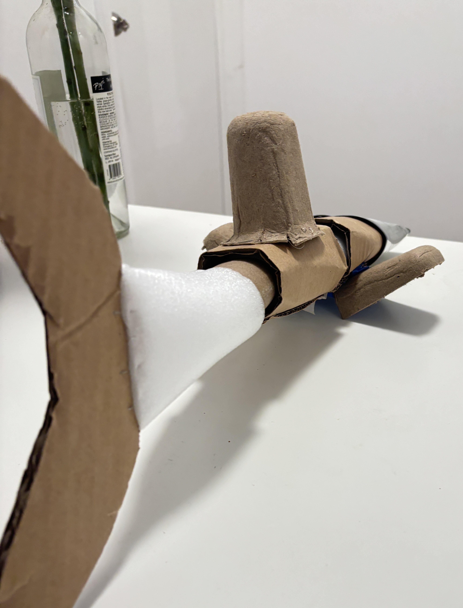
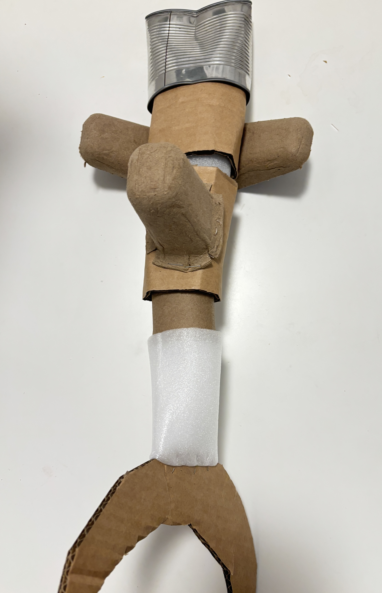
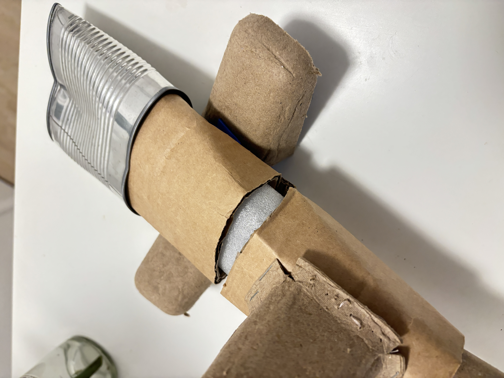
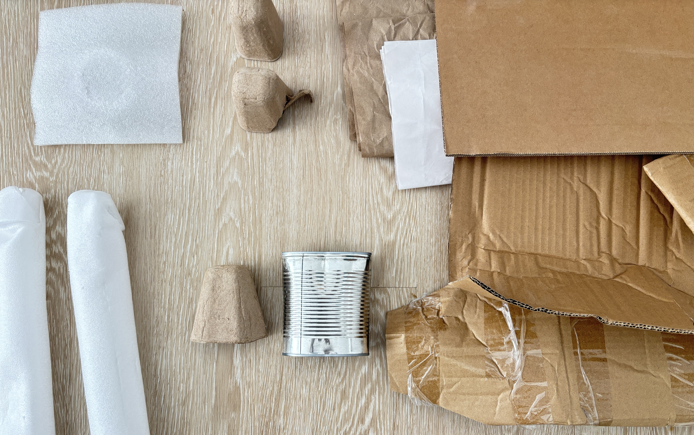
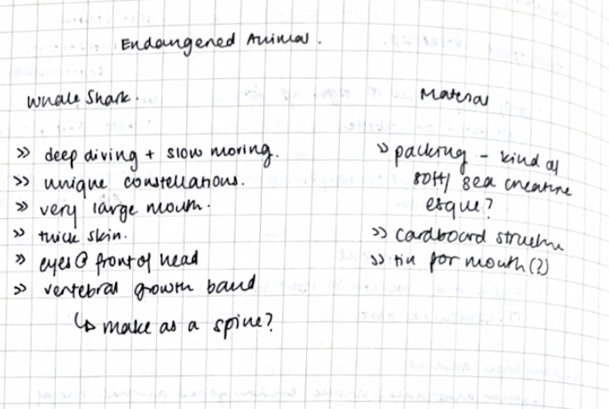

Endangered Animal
process documentation
- Desc
- create a model of an endangered animal using reclaimed material
- When
- Sept & Oct 26
- Medium
- Carboard, Wrapping Material, Tin Can
I began by considering the materials I had access to. I had a lot of packing material and carboard lying around because of a recent shipment. I collected all my materials, and arranged them for review, trying to recognise shape and patterns.

The shape that fascinated me most was the can. I am used to this being a purely functional form, and have never really seen the ribbed pattern of the metal. Looking at this shape made me think of oblong bodies, which was my thought when moving to the research aspect of the project, and the main reason I chose to look at whale sharks.
I read about the nature of the species's endangerment. Despite the distance from human population, the deep diving sharks are threatened by fishing activites, vessels, 'bycatch' and climate impact. The climate impact made me circle back to the materials I was dealing with, all collected from a single shipment. In considering how I can represent the shark through these forms, I read more about the biology. Some aspects of their biology is fascinating; They have constellation patterns that, like fingerprints, are unique to each shark. Their shape is also unique, with a large mouth that can open 5 feet wide.

While researching these details, I was still considering the materiality of the model, and how it can reflect elements of the shark itself. I was attached to the idea of using the can somehow, and considered using it as the body of the whale. After brief attempts to use this form, I found that the material was unwieldy and it automatically shrank the scale of the project. I read further and found that whale sharks have vertebrae, essentially a spine. I began thinking of the animal in parts, as internconnected shapes rather than one body. So, the yawn of the can's opening seemed to automatically become the mouth of the animal, and the ribbed metal an allegory of its gills. I then moved to paper to sketch out what these parts could be, and was able to split the body of the whale shark into smaller more negotiable cylinders that eventually formed the spine.

From here on, my process was more about wrangling the materials. I found that the carboard was quite tough (like the skin of the whales themselves) and that I had to sometimes strip a layer of the carboard to make it bend and connect in a way that actually reflected the shapes I wanted to build. The most unexpected and beneficial use of material was, I think, the long foam tubes, which helped me construct the spine in a more structured manner. It essentially gave me a tube around which I could build the body of the shark and extend outwards. Making the fins and the tail then became easier, as the manipulated shapes could easily attach to the base I had built.
My final inclusion was the constellation pattern.Given the uniqueness of this feature, I felt I would be remiss to exclude it from the model.